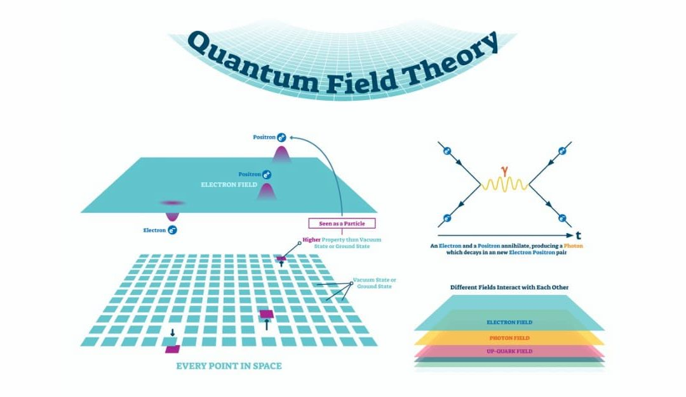
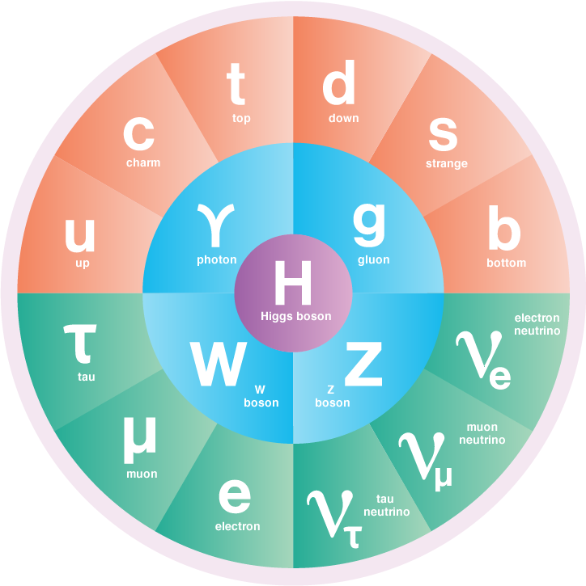

Théorie des Champs & Modèle Standard
L'univers quantique, régi par des lois physiques distinctes de notre monde quotidien, nous plonge dans un monde à la fois fascinant et énigmatique. La théorie des champs et le modèle standard constituent deux concepts clés qui nous permettent d'en percer les secrets. Ces piliers fondamentaux de la physique quantique offrent une description unifiée des forces et des particules élémentaires qui façonnent l'univers.
La Théorie des Champs : Au-delà des particules ponctuelles
La théorie des champs bouscule notre vision traditionnelle des particules ponctuelles et propose une perspective révolutionnaire : l'existence de champs dynamiques qui imprègnent l'espace-temps. Ces champs, quantifiés selon les principes de la mécanique quantique, constituent l'essence même des particules élémentaires.
- Champ: Une entité physique qui se propage dans l'espace-temps, possédant une valeur à chaque point.
- Quantification: Les champs quantiques ne peuvent prendre que des valeurs discrètes, définies par des quanta d'énergie.
- Interactions: Les interactions entre particules sont décrites par l'échange de bosons, particules médiatrices qui transportent les forces fondamentales.
Le Modèle Standard : Unifiant les forces de la nature
Le modèle standard, une théorie quantique des champs, unifie trois des quatre forces fondamentales qui régissent l'univers :
- Électromagnétisme: La force responsable de l'attraction et de la répulsion entre les particules chargées, comme les électrons et les protons.
- Interaction faible: La force responsable de la désintégration radioactive et d'autres processus impliquant des neutrinos, des particules mystérieuses et insaisissables.
- Interaction forte: La force qui lie les quarks, particules élémentaires encore plus petites, pour former des protons et des neutrons, les constituants du noyau atomique.
Le modèle standard repose sur des principes de symétrie qui décrivent les interactions entre les particules et introduit le mécanisme de Higgs, un processus permettant d'expliquer la masse des particules élémentaires, une propriété qui semblait initialement incompatible avec la nature quantique des champs.
Les limites du modèle standard : Un univers plein de mystères
Malgré ses succès remarquables, le modèle standard ne parvient pas à expliquer la gravité, la quatrième force fondamentale qui joue un rôle crucial à l'échelle macroscopique. De plus, il ne prend pas en compte la matière noire et l'énergie noire, des entités mystérieuses qui constituent la majeure partie de l'univers.
Ces limites du modèle standard ouvrent la voie à de nouvelles recherches et découvertes passionnantes. Les scientifiques continuent d'explorer des théories plus complètes, comme la théorie des cordes ou la supersymétrie, qui pourraient unifier les forces fondamentales et expliquer les mystères de l'univers, y compris la matière noire et l'énergie noire.
Pour aller plus loin : Explorez l'univers quantique
Si vous êtes curieux d'en apprendre davantage sur la théorie des champs et le modèle standard, voici quelques suggestions :
- Lisez des articles scientifiques vulgarisés ou des ouvrages dédiés à un public non-spécialiste.
- Visionnez des documentaires et des conférences sur le sujet, présentés par des scientifiques passionnés.
- Suivez des cours en ligne ou des modules d'apprentissage interactifs pour approfondir vos connaissances.
- Participez à des forums et des discussions en ligne avec des passionnés de physique quantique pour échanger et partager vos questions et découvertes.
La théorie des champs et le modèle standard ne sont que le début d'un voyage passionnant dans l'univers quantique. En explorant ces concepts fondamentaux, nous ouvrons une porte vers un monde fascinant de découvertes et d'interrogations. Qui sait quels secrets l'univers nous réserve encore